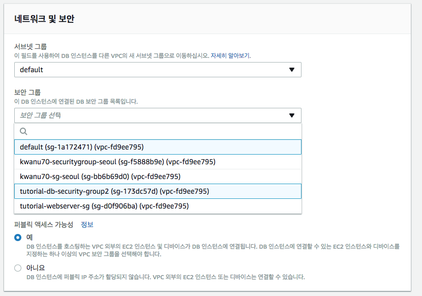

DB 인스턴스를 복원하는 경우 복원 원본으로 사용할 DB 스냅샷의 이름을 입력하고 이 복원에서 생성되는 새 DB 인스턴스의 이름을 입력
- DB 스냅샷에서 기존 DB 인스턴스로 복원할 수는 없고, 복원할 때 새 DB 인스턴스가 생성됨
- DB 인스턴스를 복원할 경우 기본 DB 파라미터와 보안 그룹만 복원된 인스턴스와 연결됨
- 복원이 완료되는 즉시 복원의 원본 인스턴스에서 사용하는 사용자 지정 DB 파라미터 또는 보안 그룹을 연결해야 함
DB 스냅샷에서 DB 인스턴스 복원 방법
- 탐색 창에서 [스냅샷]를 선택합니다.
- 복원 원본으로 사용할 DB 스냅샷을 선택합니다.
- [인스턴스 작업]과 [스냅샷 복원]을 선택합니다.
[DB 인스턴스 식별자] 텍스트 상자에 복원된 DB 인스턴스의 이름을 입력후, [DB 인스턴스 복원] 선택

- 스냅샷으로부터 복원되는 DB 인스턴스가 생성되는 데는 시간이 다소 걸림
복원된 DB 인스턴스를 선택하고, [인스턴스 작업]-[수정] 선택

[네트워크 및 보안]의 [보안 그룹]을 복원원본에서 사용한 보안그룹으로 설정

[계속] 클릭
[DB 인스턴스 수정] 클릭